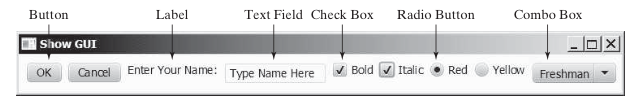
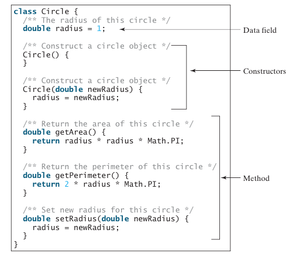
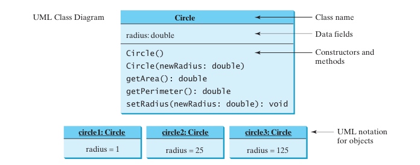

CS201: Introduction to Programming
Lecture 9 / Objects and Classes
Reading assignment: chapter 9
Lesson Objectives
- To describe objects and classes, and use classes to model objects
- To use UML graphical notation to describe classes and objects
- To demonstrate how to define classes and create objects
- To create objects using constructors
- To access objects via object reference variables
- To define a reference variable using a reference type
- To access an object's data and methods using the object member access operator (.)
- To define data fields of reference types and assign default values for an object’s data fields
- To distinguish between object reference variables and primitive data type variables
- To distinguish between instance and static variables and methods
- To define private data fields with appropriate getter and setter methods
- To encapsulate data fields to make classes easy to maintain
- To develop methods with object arguments and differentiate between primitive-type arguments and object-type arguments
- To store and process objects in arrays
- To create immutable objects from immutable classes to protect the contents of objects
- To determine the scope of variables in the context of a class
- To use the keyword this to refer to the calling object itself
Introduction
Object-oriented programming enables you to develop large-scale software and GUIs effectively.
Imagine if you have to write code for the above GUI without OO. Where would you even start?
Defining Classes for Objects
Object-oriented programming (OOP) involves programming using objects. An object represents an entity in the real world that can be distinctly identified.
- State -- what it is
- Behavior -- what it does
Let's break down objects some more:
- Objects of the same type are defined using a common class
- A class is a template, blueprint, or contract that defines what an object’s data fields and methods will be
- An object is an instance of a class
- You can create many instances of a class
- Creating an instance is referred to as instantiation; the terms object and instance are often interchangeable
- Classes are definitions for objects and objects are created from classes.
Anatomy of a class
UML Diagram
Unified Modeling Language or UML: common way to describe OO design
Constructing Objects using Constructors